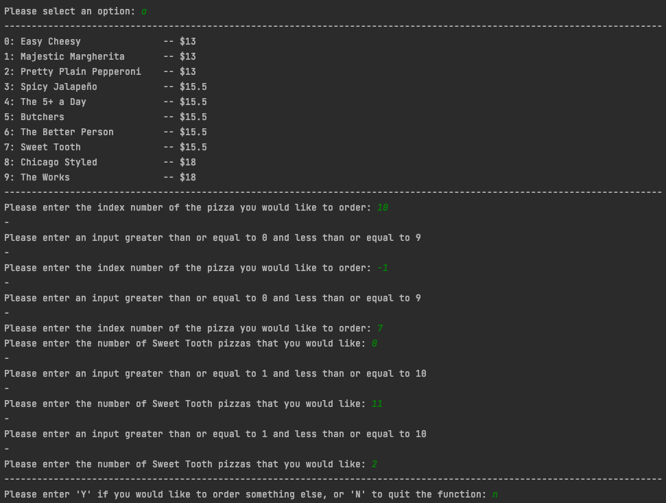

Brief
I aim to create a program for Marsden pizzas. It will be for users that are wanting to order pizzas from a menu,
where they can order and enter personal details, edit, review and confirm their order, while being able to handle all
user input accordingly and error free.
For this project, I intent on using an agile process throughout building
this program, which I believe is the best and most suited method for this project. I also aim to be using GitHub, which
is a website that can manage and store my entire project, including the project backlog (needed for the agile process),
that has access to the stages of my work throughout the build.
Initial project backlog
Sprint One
My aim for this first sprint is to build the main function, which will run my other functions that I build throughout this development process. For this sprint, I should only have two options in the menu, one to quit, and another to print out the pizzas available (I will also be building this function).
Rough program plan for sprint one:

Sprint one project board in progress:
Sprint one test:

From the image above, it shows how my sprint one is working how I had imagined and hoped that it would, no unexpected errors occurred. The temporary menu (I intent to add more types in the future) prints correctly and how I designed, the option to quit also works properly. I also added styling which printed in the way I intended.
Sprint review
I believe that sprint one worked successfully and accordingly. I now have a basic menu that will run the functions available to the user when they select what option they would like to run. I also have a basic list of pizza types, that in future sprints, the user will be able to choose the types they would like to order. For the next sprint, I would like to include a function that allows the user to choose whether they are going to have their order ready for pick-up or for delivery. If this works successfully, I will then expand the program further.
Sprint Two
For sprint two, my aim is to create a dictionary that will hold all of the users information, located in the main function. I also aim to create a function that will ask for the users information, and the range of information needed based on whether the user chooses "delivery" or "pick-up".
Rough program plan for sprint two:

Sprint two project board in progress:

Sprint two testing:


From the two images above, it shows how the function I have added and the dictionary is correctly working. In the first image, I also printed out the dictionary that includes all of the users information to check if the information the user entered, has been inserted into the dictionary in the main function (which it has). The user is also correctly asked information that would be needed, according to their choice of either "Pick-up" or "Delivery". My styling has printed out well and I can now pick and choose information that I would like to use in future sprints from the main dictionary. I am trialling this method for the cost value in my program, for this current sprint I believe that it works successfully, but in future sprints I may wish to use an alternative and more advanced process, where extra costs like the cost of delivery are separate from the main cost.

I have not yet included validation, which as shown in the image above, is needed. The user is able to crash the program if they entered the wrong input or have a name with special characters and no there is no maximum and minimum length. These are all aspects of validation that I would like to include in a future sprint
Sprint review
When going about this sprint, there were multiple ways of designing a delivery pickup function. I could have made it with lists or individual values, but I thought that the best way to go about it was by creating a dictionary. The dictionary includes all of the information that would be needed about the user, according to whether they are wanting delivery or pickup. This way, if I wanted to include any personal information in future functions (like the cost), then all that I would need to do is pass it through the function, and pick out the information I would like to use. To set up the dictionary initially, I am trialling the method of setting the 'cost' value to zero in the main function at this stage. If I had done it a different way, then my code could get cluttered or would need to call a range of arguments for information that is all related. I can also easily comment out this function when I am testing and add it later to be more efficient with my time. I think the function works well but will definitely need validation in a future sprint so my program can handle unexpected input, I have mentioned this in my tests for this sprint.
Sprint Three
My aim for sprint three is to create a function that allows the user to add a pizza, from the list of pizzas that is given to them, and then adding this information to a multidimensional list dedicated towards containing the users order. This list will be located in the main function.
Rough program plan for sprint three:

Sprint three project board in progress:

Sprint three testing:
From the image above, it shows how my function works correctly. The price adds up to the correct one, and a separate list is made, with the users order so I can easily access it or print the order in a future function, if the user wished to see it. I have made it so the pizza name and price from my list of pizza types is transferred onto their order, so it remains the same name throughout my code. Pizzas can easily be put on the users menu at any point from the main menu. It is also inclusive to those with a gluten allergy as GF bases are made available.
From both of these tests, it is clear that this sprint is not without faults. There are many times in this function where a user has to enter input and there are no restrictions on it. In the first picture, I have shown how the program crashes with an error message, this occurs if the user accidentally enters an index number that is not included in the list of pizzas. This is not a good design currently as I definitely need to be aware that users may make mistakes and the program should not crash because of this. In a future sprint, I hope to make validation so this error will not occur. In the second image, it shows how there is no limit on the amount of pizzas a user can order which is unrealistic so I aim to validate a limit. It also shows how the user could enter anything for the base (because it is a string), so I will also need to validate that so there are only two possible inputs (plain or GF) that will be placed in the order list.
Sprint review
This sprint has been successful, without any unexpected issues. I thought the best way to go about this sprint was to have the users order go into a separate list, taking values from my pizza types list into their order, with some additional information. The user can easily go back and re-add a different type of pizza, though another issue that I have noticed is that if the user wanted to add another pizza of the same type, then that would create a new set of values, over just changing the amount in the list, this will also need validation. There are many aspects that require validation in a future sprint to avoid any mistakes or incorrect input recorded, which I mentioned in the testing. In the next sprint, I aim to create a function that gives the user the ability to edit their ordered pizzas.
Sprint Four
For my sprint for, I aim to create a function that will allow the user to edit the order that they would have created using the function I made in my previous sprint. This should give the users the ability to change the amount of pizzas that they would like, or remove a particular type. I would also like to create a function to print out the users order and improve the current way I have have set up for calculating the cost.
Rough program plan for sprint four:
Sprint four project board in progress:
Sprint four testing:

In my sprint 4 testing, you can see that my editing function has works as expected. In this image of my first test, both aspects of editing a users order work well. A pizza is successfully removed from the list when a user enters '0'. This is important because a user may want to remove a whole type of pizza from their order, rather than just altering the amount on there, as mistakes are always made and should be considered. Applying this same reasoning, a user may also want to change the amount of pizzas they have of a type, so this is also an important piece of code. As you can see in this test, the cost function that I introduced is also working as planned, and functions better with the design of this program.

In these following three tests, it demonstrates how there is still many faults in the construction of my code. As seen in my previous sprints, these errors are caused by a lack of validation throughout my design, which I hope to improve in the future. There is currently no limit on the number of pizzas that the user can order, which is unrealistic. A large fault is also that the program quits with an error message, if the user enters a letter or special character, when the input is for an integer. Like the previous sprints, there is also an error message if the user enters a value for the index numbers, that is not on the list. Through a function that I created to print out the user's order, the order prints out correctly and with index numbers to be more clear to the user. In the last image, I noticed there is an error in how the pizzas add to the user's order within the previous, 'add_to_order' function. This was only noticed in this sprint, as previously I did not print out the actual order in function in the last sprint. The error occurs if the user enters the same type of pizza in the add_to_order function, more than once, so the same type appears in the order, but with different quantities (according to the input). These errors I aim to fix in future sprints.
Sprint review
In this sprint, my editing function worked accordingly, I also made a few minor adjustments throughout my code to
better it. The first adjustment I made was to display the index numbers beside the pizza types in the menu and on their
order, so the index numbers are more clear to the user (which can be seen in my test). I have also removed the GF option
to my code, as I realised that it was unnecessary for the point at which my program was at, in a future I may wish to
add the addition in, once it has reached a more developed stage. This is because it made my testing difficult and
tedious, when building more important elements of my program.
Another adjustment I made was in how the cost works.
I created a separate function to multiply and add together the cost of the pizzas (rough code plan in sprint four plan).
This means that I can update the cost externally, so if the user wishes to change their order, the cost will correctly
be updated. I have added extras in my main dictionary, so the pizzas total can be added externally, and other costs,
like the extra cost that is added if the user wants to have a delivery order. I believe that by using this technique to
deal with the cost value in this function is better suited than the method I used in my previous sprints. This is
because, as shown in my testing, the cost is calculated and presented in more clear and developed way. It works
efficiently with the introduction of the 'print_customer_order' function and 'edit_order' function, and there should be
no issues when implementing future functions to my program, unlike the previous method.
In a future sprint, where I
will create a function to print out the users order, I will display their total cost of the pizzas, and the total cost
of their extra costs, and then add them together for their final cost. My main focus in this sprint was to build the
editing order function, this gives the user the ability to change the amount of pizzas they ordered, or remove a
particular type of pizza from their order. This works successfully, and the main errors of the program is that there
is no validation for user entries, so many errors or problems can still occur, which is something I aim to change in a
future sprint.
Sprint Five
My aim for sprint five is to create a function that will allow the users to review their order, that will print out what they currently have, in a format similar to a receipt. I would also like to have a confirm order, so the user can confirm and exit the program. Along with this, throughout some of my previous function, I would like to include some code that will ensure the user enters information in the correct order.
Rough program plan for sprint five:

Sprint five project board in progress:

Sprint five testing:
In the first image above, it shows how my review sprint function works correctly, printing the order out in a presentable way to the user how I intended it to be. The second and third image demonstrates how my confirm order function also works correctly, the customer's order and information is presented in a clean and readable way, so the customer can clearly see what they have entered, if in any way things need to be changed. The user is then given three options to choose, so they could either confirm their order, exit to the main menu or select 'N' to be given the option to return to the main menu or cancel their order. From this, when the user enters the correct input (in the next sprint I will validate entries in case incorrect input is given), the two main functions that I created in this sprint are working successfully. This now means that the user will be able to clearly view their order progress, after the information is given, so they can easily recognise any errors they may have made. The confirm function clearly shows the user what they have entered once again, so they can confidently confirm what they have ordered, while also being provided with options to return to the main menu, in case they are not ready yet.

In this sprint, I also decided to add some code throughout my review, confirm and edit functions. This is because these functions rely on information that is gathered about the user or their order, from other functions. This is so these functions will not crash if the user had not already entered the information. While there are other ways that my code can crash, due to the fact that user entries have not been validated, hopefully this will be fixed in my next sprint. As you can see in the images above, if the user was to select those three functions before entering information required and gathered in other functions in the menu, a helpful and clear error message is given to the user. This will help the user to understand the error they made, and how they can fix it.
In this sprint I also revisited the function that I created in sprint two, adding in the small function I created for the confirm order function, which is to print out the customer details in a presentable way to the user. I wanted to improve this function by including this, so the user is aware of their system status throughout the program.
Sprint review
For sprint five, my main focus was to create the review and confirm order functions. These mostly required the
styling of my order list and dictionary with the user's personal information. This was important to do so the user can
easily understand the information presented, to avoid misinterpreted information, which could cause the user to make
undesired errors. As my program is not yet fully validated, there are still many areas were errors can occur. Once my
program is fully validated, if information is misinterpreted errors beyond the programs control may occur, like if the
user enters the wrong pizza and is not aware of it. If the information presented in the review and confirm is clear and
readable, the user can recognise a mistake and easily change it (as after the information is presented to them, the
user is able to return to the main menu to adjust their order).
As shown throughout my testing, both of these
functions work accordingly. The information shown in both the functions is shown to the user in a presentable way. In
the process of building the confirm order function, I also made some minor adjustments in my code, so that it works in a
better and more efficient way. I added in one small function, 'init', which creates the main customer information
dictionary outside of the main menu, setting the values for 'cost' and 'extras' to zero. This is so the after
confirmation of the user's order, the dictionary can easily be cleared so if they wish to make another order, then the
user can do so without any issue. I believe this is a better way of setting up my dictionary for customer details than
the technique I trialled previously, where I set these values in the main function, as now it can easily be cleared or
updated, with the same or different values.
Finally, I also noticed that with these two new functions, along with
function I created in the previous sprint, that as all of them require information from fields filled throughout other
the edit function in the menu, an error will occur if the user has not filled them. To fix this issue, throughout these
functions, I built a similar piece of code that will check if the fields required have been filled, and if they have
not, a helpful error message will appear to advise the user, avoiding a crash in my program. This worked successfully,
as tested above, so the user is aided in entering the correct input. In the next sprint, I aim to finally add in
validation for general string inputs and integer inputs, while also including some more focused restrictions towards
validating a phone number and name input. I also hope to fix the error I noticed in my previous sprint, so the same
type of pizza cannot appear more than once in the order.
Sprint Six
My aim for sprint six is to add three main validation functions, 'get_integer', 'get_string' and 'single_string'. I want to validate user entries using these main functions, to hopefully eliminate unwanted errors in my program to validate when a user enters an integer, string and single character string. I also hope to create a 'phone_number' function, dedicated to the validation when the user is asked for a phone number, along with slightly validating the entry of the users name. I also aim to fix the repeating pizza type error I addressed earlier on.
Rough program plan for sprint six:


Sprint six project board in progress:
Sprint six testing:
The images above shows the validation that has been added to when a user enters an integer. In my previous tests of my program, I recognised that I needed a function to validate integer entries, as without it, my program would crash or an unwanted value would pass. To fix this error, as shown above, the 'get_integer' function validates an integer input by taking the specific minimum for the message and ensuring that the user's input is greater than or equal to the set minimum. The same applies for the optional list maximum value, that I have designed in a way so it is not a required value, as there may be a message that does not require a maximum value in the future. With this, the function checks to see if the user's input is less than or equal to the maximum, if there is a maximum value. The user then receives a specific error message, according to the error that they have made and is also unique to whether it has a maximum value or not. These error messages are clear and informative to the user, so they can understand and fix the error. Everything in this test of this function is working successfully and as imagined.
In the two images above, the validation in the 'get_string' function is demonstrated for string inputs. In my previous tests of my program, I also recognised that I needed a function to validate string entries, as without it, unwanted input could pass, hence the reason I created 'get_string'. In the first image, it shows how the user's name has been validated, so only letters in the alphabet, a hyphen and space can be used when the user is entering their name. This aspect is not apart of the 'get_string' function, as I added these restrictions directly into my 'delivery_pick-up' function. This is because not all string inputs would require these limitations, for some may require numbers, letters and/or special characters. If the user enters something other than this, a helpful error message is given to the user that is clear and informative to aid in helping the user improve their error. For the name, the input will first loop through the 'get_string' function, which will ensure that the input is greater than or equal to the minimum and less than or equal to the optional list maximum value if there is one (for the same reason as get_integer). get_string also makes the input have an uppercase first letter, with following lowercase letters from .title(). This is because in this program, when get_string is required, it is for the input of a proper noun, which requires this way of input. Examples of this function correctly and accordingly working is shown in both images above.

The images above are examples of when the function, 'single_string' is used throughout my program. This function is being used to validate single string entries, and as shown above, is working as planned. In the first image, it is shown how single_string can only accept a valid single-letter which is unique to the message. In this case, an optional string for an error message has been used. While in most cases the input requires is very similar, so the same error message can be used, the unique error message is used as there are many possible entries in the menu. I have included this optional value to pass into the function for in the scenario that a different error message is required. As all of the input's that are required are all capital letters (which I edited as I realised that that was the most efficient way to do it), so if the input is entered lower-case, then using .upper(), the input becomes upper-case to match the required input, which is also seen in the testing images above. The user gets a specific and helpful error message, according to their situation, and if a different one is required then it can be passed in. This will mean that the user can easily interpret what is required for a correct input.
In these images above, the validation from the 'phone_number' function is shown to validate the user's entry for a New Zealand telephone. The function erases any excess characters other than numbers for getting the phone number. This is because some people may enter their number like: '021-23...' or '04 28...', so by remove them using a regex, the regex can then match numbers with numbers, without have to deal with extra items. In the first test above, it demonstrates how this function is working correctly. In New Zealand, there are also many different types of phone numbers, each with different maximum and minimum lengths. As seen in the testing above, correct inputs of a Local Number, Mobile Number and National Number for New Zealand have passed, as they contain the correct beginning digits with the unique and minimum values. When the user's input does not match a New Zealand phone number, an error message appears to avoid incorrect input being passed. After the user has entered a correct input, according to the type of New Zealand number the user entered, the minus signs separate the number in the correct format, in a readable and presentable way to the user, allowing them to easily recognise if they entered their correct number or not, avoiding errors. In this function, everything worked as planned, as seen in the tests above.
Finally, in this last image above it demonstrates how the error where two pizzas of the same type would appear in the user's order, if the user wanted to add more of that type of pizza to their order. By including a small piece of code into my 'add_to_order' function, I managed to fix this error and further improve the effectiveness of my program. This was done by checking the users order to see if the pizza type from the pizza list was already in the user's order.
Sprint review
In this sprint, I included four new functions towards validating user entries which were successfully built. There
were also a few minor adjustments to improve this validation, allowing for my program to be error-proof and able to
handle the user's entries if they are incorrect. My 'get_integer' allows for an individual message to have different
minimum values and an optional list maximum value. This means my program is able to handle future scenarios for
integer inputs, where some of which may not require a maximum value. The same applies for my other validation
function, 'get_string', where there is also an optional list maximum value for future user string entries that may or
may not require a maximum value. Both get_integer and get_string have provided my program with basic string and integer
validations, that should be able to be used on most typical string or integer user inputs. These can also be paired with
a more detailed validation (similar to what I did for validating the name entry), that may require minimum or maximum
values along with further restrictions.
My other main validation function that is used many times throughout my
program is 'single_string', which is designed to only accept strings that are one character long. This function allows
many different correct inputs, and with alter with each message. This means that it should be able to be applied to
most scenarios where a single-character string is required in the possible future of this program. With this, I made a
slight adjustment to the main menu options, and decided to change it into a dictionary over a multi-dimensional list.
This made the implementation of this function easier for that specific message, and as a menu will not require more than
two fields, it improves the functionality of this program, currently and for future. By including an optional list error
message, this allows for different situations to occur, other than the typical error message that is printed for shared
common errors a user may make in my program when entering a single-character string.
The last validation function
that I introduced in this sprint is the 'phone_number' function, which has been designed to take the input from the user
of a New Zealand phone number. This has been done in a flexible way, that allows all the possibilities of a number in
New Zealand, to ensure that there is no issue with the number that the user has entered. It is easy to change the range
that the particular number (whether Local, National or Mobile), if for some reason they change in the near future. It is
also printed in a clear, familiar and readable way for the user.
As well as this, I also fixed the issue that
occurred with the same pizza type appearing separately in the order. Overall, this validation sprint has been
successful at eliminating the errors that could have occurred in the program beforehand, allowing the user to make a
mistake while entering input, which is something all users have a possibility of doing.
Final testing
PEP8 code checker test
Before:

After:
After I believed that my code was at a high standard and almost complete, I decided to run my program through a code checker to ensure that there were no errors that went unnoticed. As I copied and pasted my program, none of the issues that I encountered were not major errors, but errors that were to do with whitespace issues and the length of my code lines. These are easily fixable, which is why most of the messages were cleared at the end of test, and the only errors that remained were the lines of code were in 'if' conditions. I reduced all of the other lengths throughout my program and removed the whitespace. I am glad that I did this code check, so I could remove these small errors from my program for it to be a better quality.
Testing my final program on my Dad
After running many tests on my program throughout my plan, I ran a full test with my Dad to see how the program deals with an outside customer. This was done once I believed that my code was able to handle user input and perform without errors, with the intention that no errors would be found for the customer. This was the case, as when witnessing how an outside user interacts with my program, it performs accordingly and there was no unexpected input or results. This was important to do before finalising my project as a user that is unfamiliar with the program can discover errors that I may have missed throughout the project, which fortunately, did not occur.
Git Commits and Project Backlog
Final Backlog
Throughout the production of this program, I have been referring back to by Project Backlog, stored in GitHub, which is the website that has been storing and managing this project. GitHub has helped to keep me following my backlog structure, which is where I decompose my larger project into sprints, where I can prioritise tasks that need to be completed in my project. This is an important part of the agile development process, and GitHub has helped to keep this tracking throughout the progress of each sprint. The project backlog allows for creative freedom, as I can include future sprints in my backlog that I may wish to complete and expand my program. I can include specific sprints that may be a challenge for me, but will help to grow my knowledge and program.
Commit history
After each sprint that I completed, I have been committing my progress to GitHub, where it stores all the information for that sprint, at whatever stage of the project I am in, so in case of an emergency, I can restore a previous sprint's history. I can constantly store the latest version of my work in GitHub, and view the timeline of my project, with the commits of each version. By storing my project's information on GitHub, in the event where I may lose my project because of instances like a broken computer, I will be able to access the most recent sprint that has been committed on my GitHub. The history above is what has been committed throughout the production of the project, from sprints 1-6. My commits have been mostly following the structure of a commit per version, where as most of my sprints were quite large, this process was able to stay fairly consistent. After this, I will complete one more final commit, with the most recent progress of my project for finalising.
Reflection
In this project, I have successfully created a program for ordering a pizza, accomplishing the tasks that
were initially set in the brief. My program can print pizzas from a multi-dimensional list, allow users to order pizzas
from that order, let them edit what they've ordered, ask for their personal information according to what type of
method they are using to collect the pizzas, allow the users to review what they have ordered and confirm their order.
This program is able to handle all types of input that is gathered, with a wide range of validation placed on the user
entries to ensure that no incorrect input is passed or an error occurs. The cost of a user's order is successfully
calculated, adding the extra costs together to create a correctly functioning calculation. Each individual function
functions at a high level and cleanliness, allowing each task performed well.
I believe that this agile method of
process, run through GitHub, has created the ideal outcome throughout the creation of this program. By thoroughly
planning each sprint to begin with, it taught be to carefully consider each function and to prioritise each one
accordingly. To begin with, I did not fully understand this process, as I introduced the option of gluten free pizzas
very early on in my design process. As I became more familiar with the agile method, I learnt the importance of
forward thinking when designing a digital product, helping me to achieve the current piece of code that I have
currently. I had to prioritise components of this project that may have been more enjoyable to add in like specific
toppings and features, these were not practical as I was given a time limit on the creation of this program. I have
designed my code in a way that if I were to continue with this project, then it will be fairly easy to create new
aspects and complete the more extended aspects of my project backlog on GitHub. Through testing and trialling
components heavily, this stage in the agile process was extremely important and beneficial to the development of my
code. This stage allowed me to discover many errors throughout the build of this program, many of which I probably
would have never noticed. Without trialling and testing, both individually and using external sources, my program would
be full of errors, most likely lacking validation in many areas and most likely have the ability to crash with user
input. This would be a poorly designed outcome, as a program reliant on user input should not fail with user input.
Using this process taught me the importance of testing, as it was a primary factor towards the betterment of my
program.
In summary, I am extremely glad that I chose this method for project management and the processes that I
underwent when designing this program. This is because it helped me to develop the program beyond my original ideas
and create a well-designed and functioning program which successfully fulfills the requirements.
Relevant implications
Sustainability and future proofing
Throughout my program, I have addressed the relevant implication of sustainability and future proofing. This relevant implication is important to consider, as a program should be adaptable and have the ability to expand with new applications and frequent updates. I have addressed this implication by using a function structure where if there are new additions to the program that want to be added, then it can easily be added by creating a new function, and then running it through the main function to run the program. A new function could be considered a new sprint, so it is easy to plan and execute expansions for my program. Throughout my functions, I have also created room for improvement or future changes, so if the functions need to be altered or particular values throughout my program need to be added, it is easy and able to be altered. Some examples of this relevant implication being used in my program are: by having general 'get_integer' and 'get_string' functions that are applicable to most forms of string and integer inputs, meaning that a future sprint, if a function requires a general string or integer input, then these functions can be easily incorporated into the function. By including optional list values in my main validation functions like maximums and optional error messages, then future input can use the main functions, and have the flexibility to either include these optional lists or not. I have small functions for the headers used to style my program, so the information presented to the user is clear and understandable, these are so I can easily change the length or design, without having to individually change each line break. By including the 'init' function, the information in my main dictionary for customer information that it originates with can easily shift, without altering the main function. The same idea applies with my small functions included that are used to print out the order and pizza types, so these can easily be altered and called throughout functions, without having to individually change it's information. While there are only two values in my multidimensional list for my pizza types (name and cost), where it may appear easier to have a dictionary, by making it a list, there is room for additional information to be added in the list for my pizzas in the future, such and ingredients or dietary information for the user. Throughout my code, I have also used doc strings and comments, so future programmers or myself can easily understand my code, so it can be used by exterior programmers and developed upon and remain a useful program.
Usability
The relevant implication, usability, is also very important to focus on while building a program. It focuses on the idea that a digital product is able to be understood and properly used for it's desired purpose. That errors can be recognised and recovered from throughout the process, that all information is displayed in a clear way, so the proper requirements of the program is executed in the most efficient way. In the program that I have designed, it is focused around gathering information from the user. Because of this, the program must be easy to understand for a user, so it is easy to use and navigate through the program. The program must also be able to recognise and recover from errors that a user may make, and then clearly instruct the user on how to enter the desired input. I have been actively considering how easy the information presented to the user is to understand. I have been doing this to address this relevant implication, so the user can easily use this program, as they can understand what input is asked of them. I have made this information clear to the user by giving polite, informative prompts to the user when they must enter input and throughout my program. I have also made sure to present my information in a presentable way by styling certain data. For example, this is used after the user enters their phone number, by using '-' to separate the digits in a common and clear format, so it is easy for the user to use. If the user makes an error, then an understandable error message is given, making it easier for the user to correctly improve their input, over a message such as 'incorrect input'. I have also addressed this relevant implication by using .upper(), .title() and my regex which strips things other than integers from the string. This makes the program easier to user as these will automatically make the users input into a more understandable input, without the user having to re-enter information that is technically the correct input. For example, for single string inputs that require a capital letter, if they entered a lower-case version of the correct input then it will be still be counted as the correct input. At the end of each function, the user is returned to the main function so the user can easily use most functions multiple times, and the menu is easy to use.
Functionality
The final relevant implication that I have addressed is functionality. Functionality is about having a digital product that operates correctly, without any errors or crashes. This is also a very important relevant implication to consider while building a program, as if there are many errors and crashes throughout a program, then the desired outcome cannot be reached. A functional program should perform with the expectation of errors and unexpected inputs/outcomes, and have the ability to either prevent or recover from these occurring. Especially when focusing around the input of a user, as mine does, because users cannot be relied upon to not make faults. If a system crashes or does not run with ease, then it's functionality is poor. Ways that I have carefully considered to address this relevant implication is by designing validation. By creating three main validation functions, I have ensured that my system is unable to crash, and will eventually obtain the required input, even if the user makes an error. At each point throughout my code where a users entry is required, a validation is provided according to the type of input required, where these validations are expected to catch any type of input, and will provide a helpful message to the user to help correct their error. Across my agile process, I have also made sure to heavily test each sprint, so that I can recognise and built functions for errors that can occur. Before including new functions and code into my main program, I build and developed separately, where I tested and corrected errors that occurred. Along with this, I have also designed my code in a platform that highlights/underlines errors that are recognised, along with giving feedback on the type of error that has occurred within the code itself, which helped aid in ensuring that my program properly and successfully addresses this relevant implication. By testing on my Dad and running the program through the PEP8 code checker, I also ensured that this implication was addressed, by using an external person and software, errors that I may have missed or were missed in the program that I am running through may have missed, are noticed and addressed.